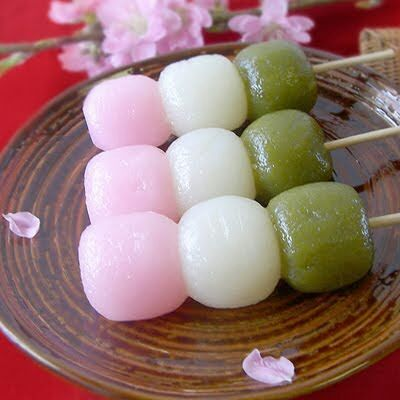

RECETAS

DANGO
es un dumpling tradicional japones elaborado con mochiko (harina de arroz), y derivado por lo tanto del mochi(pastel de arroz glutinoso). Se sirve a menudo con te verde.
LEER MÁSONIGUIRI
El arroz es el ingrediente clave en el cómo hacer Onigiri. Es importante que sea la variedad que se utiliza en el Sushi o si no será muy difícil que se pegue para armarlo.
LEER MÁSTAMAGOYAKI
El Takoyaki es una comida japonesa hecha básicamente de harina de trigo y unos trozos de pulpo. Se hace en forma de una bola, suele acompañarse de una salsa. Es una comida callejera tipica.
LEER MÁSSUKIYAKI
El Sukiyaki es un plato japonés dentro del estilo nabemono. Este consiste en carne o en la versión vegetariana hecha de tofu, cocido a fuego lento o hervido en la mesa.
LEER MÁS